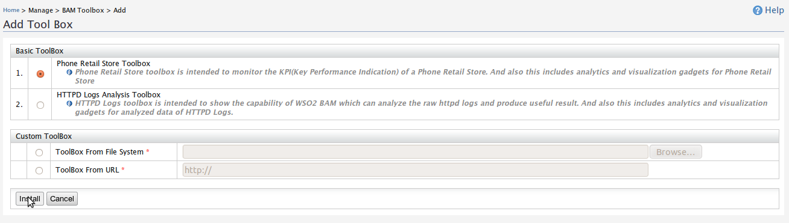
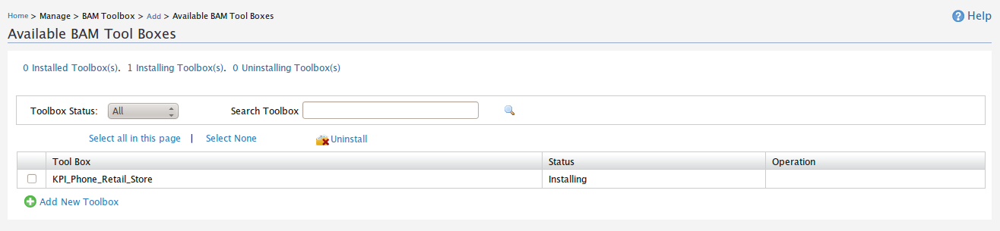
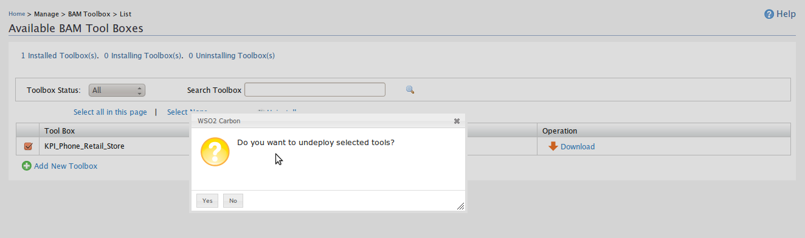
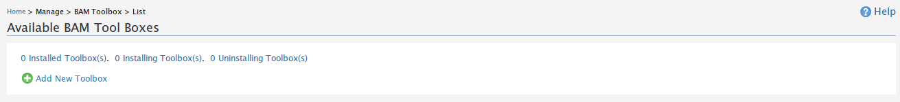

Installing a Toolbox
There are toolbox which are shipped by default with WSO2 BAM pack, and you can created your own toolboxes for your requirement also.
- Installing Default Toolbox
- Start WSO2 BAM server
- Go to management console and login
- Go to Main -> BAM ToolBox -> Add
- Select an option which are listed under 'Basic Toolbox'. Eg: Phone Retail Store Toolbox, HTTPD Logs Analysis Toolbox
- Click on Install Button
- Installing Custom Toolbox
- Start WSO2 BAM server
- Go to management console and login
- Go to Main -> BAM ToolBox -> Add
- Select 'Toolbox From File System' if you have the toolbox in your system
- And provide the necessary toolbox file path OR URL path depending on your selection in step-4.
- Click on Install Button.

This will redirect to 'List' page of BAM toolboxes. There you can notice that the selected toolbox will be in the status of 'installing'.

Wait for approximately 1mintue and refresh the page, then you can notice the status of the toolbox status has changed to 'Installed' state.

You can install the toolboxes which is not listed in under the Basic Toolbox list by providing the system file path or URL path pointing to your toolbox

OR Select 'ToolBox From URL ' if you have the toolbox in hosted in a location.

This will redirect to 'List' page of BAM toolboxes. There you can notice that the selected toolbox will be in the status of 'installing'.

Wait for approximately 1mintue and refresh the page, then you can notice the status of the toolbox status has changed to 'Installed' state.

Uninstalling Toolbox
You can uninstall the toolbox which have been installed in WSO2 BAM instance. Uninstalling toolbox involves removing your deployed artifacts from your system. Ie, If you have installed some analytic hive script via toolbox, the have script will be removed from the when unistalling the toolbox.
- Start WSO2 BAM server
- Go to management console and login
- Go to Main -> BAM Toolbox - > List
- Select the toolboxes which you are going to uninstall by selecting the relevant check boxes of toolbox
- Click on 'Uninstall' icon
- Click 'yes' on the confirmation dialog box which asks for uninstalling the toolbox


There you can notice that the selected toolbox(s) will be in the status of 'uninstalling'.

Wait for approximately 1mintue and refresh the page, then you can notice the toolbox(s) have been removed from list of toolboxes.
